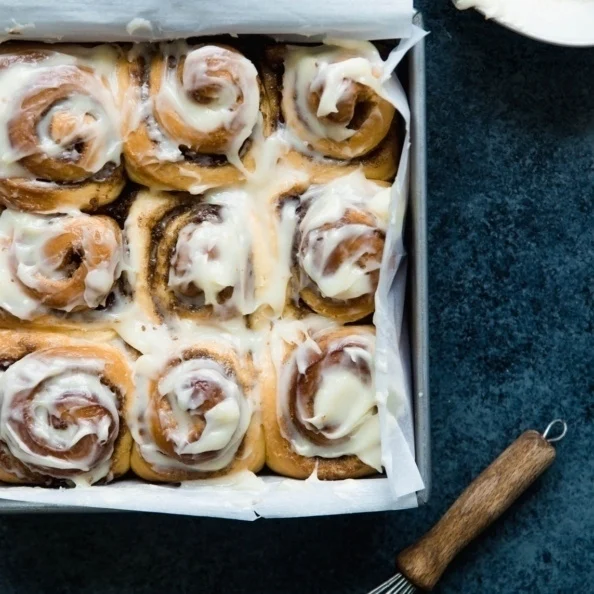

Cinnamon Rolls

Description
Cinnamon rolls are sweet rolled pastries with a brown sugar filling and glazed
with a vanilla cream cheese glaze. They are so rich and fluffy!
Ambitious Kitchen, the recipe maker, claims they are the best cinnamon rolls
you will ever eat! They even believe it can compete with Cinnabon's famous recipe.
However, you must follow very closely to the recipe to achieve the best rolls possible,
and not add more or less of an ingredient.
Ingredients
Dough:
- 3/4 cup warm milk (whole milk or 2% preferred) (110 degrees °F)
- 2 1/4 teaspoons quick rise or active yeast (1/4-ounce package yeast)
- 1/4 cup granulated sugar
- 1 egg plus 1 egg yolk, at room temperature
- 1/4 cup butter, melted
- 3 cups bread flour
- 3/4 teaspoon salt
Filling:
- 2/3 cup dark brown sugar (light brown sugar also works)
- 1 1/2 tablespoons ground cinnamon
- 1/4 cup butter, softened
Cream cheese frosting:
- 4 oz cream cheese, softened
- 3 tablespoons butter, softened
- 3/4 cup powdered sugar
- 1/2 teaspoon vanilla extract
Steps
- Warm milk to around 110 degrees °F. Transfer warm milk to the bowl of an electric mixer and sprinkle yeast on top. Add in sugar, egg, egg yolk and melted butter. Mix until well combined. Next stir in flour
and salt with a wooden spoon until aough begins to form.
- Place dough hook on stand mixer and kn dead dough on medium speed for 8 minutes.
- Transfer dough ball to a well-oiled bowl, cover with plastic wrap and a warm towel. Allow dough to rise for 1 hour to 1 ½ hours, or until doubled in size.
- After dough has doubled in size, transfer dough to a well-floured surface and roll out into a 14x9 inch rectangle. Spread softened butter over dough, leaving a ¼ inch margin at the far side of the dough.
- In a small bowl, mix together brown sugar and cinnamon. Use your hands to sprinkle mixture over the buttered dough, then rub the brown sugar mixture into the butter.
- Tightly roll dough up, starting from the 9-inch side and place seam side down making sure to seal the edges of the dough as best you can.
- Cut into 1 inch sections with a serrated knife or floss. You should get 9 large pieces.
- Place cinnamon rolls in a greased 9x9 inch baking pan or round 9 inch cake pan. Cover with plastic wrap and a warm towel and let rise again for 30-45 minutes.
- Preheat oven to 350 degrees F. Remove plastic wrap and towel and bake cinnamon rolls for 20-25 minutes or until just slightly golden brown on the edges. Cool for 5-10 minutes before frosting.
- To make the frosting: In the bowl of an electric mixer, combine cream cheese, butter, powdered sugar and vanilla extract. Beat until smooth and fluffy. Spread over cinnamon rolls and serve immediately.
Credits to ambitiouskitchen.com for the recipe.